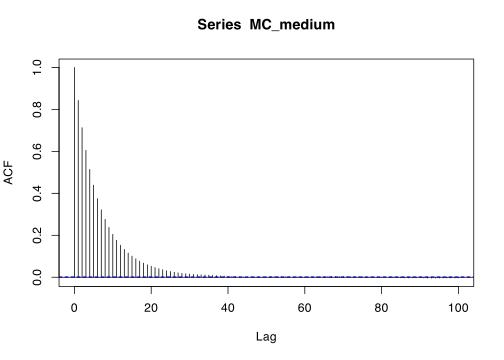
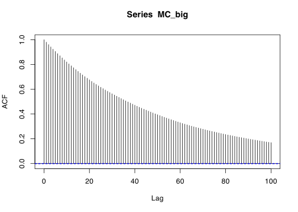

metroexp <- function(n, rate, sigma, initial) {
MC <- rep(0, n)
accept <- function(x, y) exp(-rate * (y - x))
MC[1] <- initial
for (i in 1:(n - 1)) {
prop <- MC[i] + rnorm(1, 0, sigma)
if (prop < 0) MC[i + 1] <- MC[i]
else if (runif(1) <= accept(MC[i], prop)) MC[i + 1] <- prop
else MC[i + 1] <- MC[i]
}
return(MC)
}\[ \newcommand{\Exg}{\operatorname{\mathbb{E}}} \newcommand{\Ex}{\mathbb{E}} \newcommand{\Ind}{\mathbb{I}} \newcommand{\Var}{\operatorname{Var}} \newcommand{\Cov}{\operatorname{Cov}} \newcommand{\Corr}{\operatorname{Corr}} \newcommand{\ee}{\mathrm{e}} \]
22 MCMC error
\[ \]
22.1 Bias for MCMC
Back in Lectures 3 and 4 we looked at the bias, variance, mean-square error and root-mean-square error for the Monte Carlo estimator \[ \widehat\theta_n^{\mathrm{MC}} = \frac{1}{n} \sum_{i=1}^n \phi(X_i) \] of \(\theta = \operatorname{\mathbb E}\phi(X)\) where the samples \(X_i\) are IID with the same distribution as \(X\). We saw that the estimator is unbiased, and that the variance and mean-square error are \[ \Var\big(\widehat\theta_n^{\mathrm{MC}}\big) = \operatorname{MSE} \big(\widehat\theta_n^{\mathrm{MC}}\big) = \frac{1}{n} \Var\big(\phi(X)\big) . \]
We now want to find these same values where the samples \(X_i\) are not IID but are the output of a Markov chain whose stationary distribution is that of \(X\). This will be harder. We saw (under certain technical conditions that we will assume hold throughout) that the \(X_i\) tend to the distribution of \(X\) in the limit as \(i \to \infty\). But this is not the same as saying that their distribution is exactly the same as \(X\) (let alone are independent). So here we can get as far as \[ \Exg \widehat\theta_n^{\mathrm{MC}} = \Exg \left(\frac{1}{n} \sum_{i=1}^n \phi(X_i) \right) = \frac{1}{n} \sum_{i=1}^n \Exg\phi(X_i) \] (remembering that linearity of expectation does not require independence), but then we’re a bit stuck.
To make progress, we will make a simplifying assumption. Suppose we picked the initial state \(X_1\) according to the distribution \(\pi\). Then, since \(\pi\) is a stationary distribution, \(X_2\) is distributed according to \(\pi\) too. And \(X_3\), and \(X_4\), and so on. And \(\pi\) itself is the distribution for \(X\). So, if we started from the stationary distribution – or “in equilibrium” – then we have \[ \Exg \widehat\theta_n^{\mathrm{MC}} = \Exg \left(\frac{1}{n} \sum_{i=1}^n \phi(X_i) \right) = \frac{1}{n} \sum_{i=1}^n \Exg\phi(X_i) = \frac{1}{n}\,n\Exg\phi(X) = \Exg\phi(X) ,\] and our estimator is unbiased.
Of course, in real life, it is highly unlikely that we are able to sample the initial state from \(\pi\). After all, if we could do that, we could presumably sample all the \(X_i\) from \(\pi\) independently, as just use the basic Monte Carlo estimator instead. However, if we have used a burn-in period of appropriate length, we hope that by the time we take the first sample “that counts”, after the burn-in period, that will be very close to the stationary distribution, and hence we will have \[ \Exg \widehat\theta_n^{\mathrm{MC}} \approx \Exg\phi(X) ,\] and our estimator will be approximately unbiased.
22.2 Variance for MCMC
What about the variance of the MCMC estimator. Unlike the basic IID Monte Carlo case, we can no longer say \[ \Var \big( \widehat\theta_n^{\mathrm{MC}}\big) = \Var \left(\frac{1}{n} \sum_{i=1}^n \phi(X_i) \right) = \frac{1}{n^2} \sum_{i=1}^n \Var\big(\phi(X_i)\big),\] because the samples from a Markov chain are not independent (although we have limited their dependence structure).
Instead, we have to include the “cross” covariance terms: \[ \Var \big( \widehat\theta_n^{\mathrm{MC}}\big) = \Var \left(\frac{1}{n} \sum_{i=1}^n \phi(X_i) \right) = \frac{1}{n^2} \left(\sum_{i=1}^n \Var\big(\phi(X_i)\big) + 2 \sum_{i < j} \Cov\big(\phi(X_i), \phi(X_j)\big) \right) .\]
Again, we grind to a halt as far as exact results are concerned. But we can again invoke our simplifying assumption that \(X_1\) was chosen from \(\pi\), and that we are in equilibrium. Then the variance terms are all \(\Var(\phi(X_i)) = \Var(\phi(X))\), which I shall call \(\sigma^2\). What about the covariance terms? Well, if the Markov chain is stationary, then \(\Cov(\phi(X_i), \phi(X_j))\) only depends on how many steps apart \(i\) and \(j\) are. In equilibrium, \(\Cov(\phi(X_1), \phi(X_7))\) is the same as \(\Cov(\phi(X_2), \phi(X_8))\) or \(\Cov(\phi(X_{101}), \phi(X_{107}))\): these all represent the covariance between one state chosen according to \(\pi\) and the state \(k = 7 - 1 = 6\) steps later.
So here we can write \[ \Cov\big(\phi(X_i), \phi(X_j)\big) = \gamma(j - i) = \gamma(k) \] where \(k = j - i\) is the number of steps between \(i\) and \(j\). Students who have studied time series will know that \(\gamma(k)\) is called the autocovariance at lag \(k\). (The prefix “auto-” mean “self-”, and “lag” means something like a delay.)
(The tempting hope that we might have \(\gamma(k) = 0\) for \(k \geq 2\) is not true. [EXPLAIN])
So now, in equilibrium, we have \[\begin{align} \Var \big( \widehat\theta_n^{\mathrm{MC}}\big) &= \frac{1}{n^2} \left(\sum_{i=1}^n \Var\big(\phi(X_i)\big) + 2 \sum_{i < j} \Cov\big(\phi(X_i), \phi(X_j)\big) \right) \\ &= \frac{1}{n^2} \left(\sum_{i=1}^n \sigma^2 + 2 \sum_{i < j} \gamma(j - i) \right) \\ &= \frac{1}{n^2} \left(n\sigma^2 + 2 \sum_{i < j} \gamma(j - i) \right) \end{align}\]
When we studied antithetic variables, we found it more convenient to work with the correlation \[ \operatorname{Corr}\big(\phi(X_i),\phi(X_j)\big) = \frac{\operatorname{Cov}\big(\phi(X_i),\phi(X_j)\big)}{\sqrt{\operatorname{Var}\big(\phi(X_i)\big)\operatorname{Var}\big(\phi(X_i)\big)}} . \] In equilibrium, this is \[ \rho(j - i) = \operatorname{Corr}\big(\phi(X_i),\phi(X_j)\big) = \frac{\gamma(j-i)}{\sqrt{\sigma^2\,\sigma^2}} = \frac{\gamma(j-i)}{\sigma^2}, \] where \(\rho(k)\) is called the autocorrelation at lag \(k\).
So now we have \[\begin{align} \Var \big( \widehat\theta_n^{\mathrm{MC}}\big) &= \frac{1}{n^2} \left(n\sigma^2 + 2 \sum_{i < j} \gamma(j - i) \right) \\ &= \frac{1}{n}\,\sigma^2 + \frac{2}{n^2} \sum_{i < j} \rho(j - i) \,\sigma^2 \\ &= \frac{\sigma^2}{n} \left(1 + \frac{2}{n} \sum_{i=1}^n \sum_{j = i+1}^n \rho(j - i) \right) \\ &= \frac{\sigma^2}{n} \left(1 + \frac{2}{n} \sum_{i=1}^n \sum_{k = 1}^{n-i} \rho(k) \right) . \end{align}\]
We know from the limit theorem that, as \(n \to \infty\), a Markov chain tends to its stationary distribution regardless of what state it started from – it’s as if the Markov chain forgets where it starts from. Therefore we know that the autocorrelation \(\rho(k)\) tends to 0 as \(k \to \infty\). So, provided that the number of samples \(n\) is large, there usually very little loss from approximating \(\sum_{k = 1}^{n-i} \rho(k)\) by \(\sum_{k = 1}^{\infty} \rho(k)\), because the extra autocorrelations we’ve added in will all be very small.
Finally, we get the result \[\begin{align} \Var \big( \widehat\theta_n^{\mathrm{MC}}\big) &= \frac{\sigma^2}{n} \left(1 + \frac{2}{n} \sum_{i=1}^n \sum_{k = 1}^{n-i} \rho(k) \right) \\ &\approx \frac{\sigma^2}{n} \left(1 + \frac{2}{n} \sum_{i=1}^n \sum_{k = 1}^{\infty} \rho(k) \right) \\ &= \frac{\sigma^2}{n} \left(1 + \frac{2}{n}\,n \sum_{k = 1}^{\infty} \rho(k) \right) \\ &= \frac{\sigma^2}{n} \left(1 + 2 \sum_{k = 1}^{\infty} \rho(k) \right) . \end{align}\]
In conclusion, we have the following.
Theorem 22.1 Let \((X_i)\) be a Markov chain started in its stationary distribution \(\pi\), and let \(X\) have distribution \(\pi\) also. Consider \(\theta = \Exg\phi(X)\) and its MCMC estimator \[ \widehat\theta_n^{\mathrm{MC}} = \frac{1}{n} \sum_{i=1}^n \phi(X_i) .\] Then, writing \(\sigma^2 = \Var(\phi(X))\), we have the following:
\(\widehat\theta_n^{\mathrm{MC}}\) is unbiased, in that \(\Exg \widehat\theta_n^{\mathrm{MC}} = \theta\).
The variance of \(\widehat\theta_n^{\mathrm{MC}}\) is approximately \[ \Var \big( \widehat\theta_n^{\mathrm{MC}}\big) \approx \frac{\sigma^2}{n} \left(1 + 2 \sum_{k = 1}^{\infty} \rho(k) \right) . \]
The mean-square error of \(\widehat\theta_n^{\mathrm{MC}}\) is approximately \[ \operatorname{MSE} \big( \widehat\theta_n^{\mathrm{MC}}\big) \approx \frac{\sigma^2}{n} \left(1 + 2 \sum_{k = 1}^{\infty} \rho(k) \right) . \]
The root-mean-square error of \(\widehat\theta_n^{\mathrm{MC}}\) is approximately \[ \operatorname{RMSE} \big( \widehat\theta_n^{\mathrm{MC}}\big) \approx \frac{\sigma}{\sqrt{n}} \sqrt{1 + 2 \sum_{k = 1}^{\infty} \rho(k) } . \]
Compared to the standard Monte Carlo variance \(\Var (\widehat\theta_n^{\mathrm{MC}}) = \sigma^2/n\) we have the extra term \(2 \sum_{k = 1}^{\infty} \rho(k)\). While it would be nice for the autocorrelation to be negative, to give us an improvement (like with antithetical variables), this almost never happens with Markov chains, which almost always have positive autocorrelation. Instead, we get the best results when the autocorrelation \(\rho(k)\) dies away to 0 as quickly as possible, and get poor results when the autocorrelation only decays to 0 very slowly.
22.3 Example
Last time, we used the random walk Metropolis in continuous space to sample from the \(\operatorname{Exp}(0.1)\) distribution. Let’s try some different typical step sizes \(\sigma = 2, 15, 400\). Let’s use these Markov chains to estimate \(\mathbb EX\) (which we know is 10), and examine the error in these estimators.
The function we used last time was this.
We can plot the autocorrelation \(\rho(k)\) against the lag \(k\) in R using the acf() function.
MC_small <- metroexp(1e6, 0.1, 2, 0)
acf(MC_small, lag.max = 100)
MC_medium <- metroexp(1e6, 0.1, 15, 0)
acf(MC_medium, lag.max = 100)
MC_big <- metroexp(1e6, 0.1, 400, 0)
acf(MC_big, lag.max = 100)
Remember that our goal is for the autocorrelation to die away as quickly as possible. We see that the large step size and small step size have the autocorrelation decaying slowly, while the medium step size has the autocorrelation decaying much quicker. This matched with our earlier discussion. When \(\sigma\) is too small, the Markov chain crawls around the state space too slowly; when \(\sigma\) is too large, large proposal moves are usually rejected, leading the Markov chain to stay in place. We need \(\sigma\) in the “Goldilocks” position where \(\sigma\) is small enough that the moves proposed are not too outrageous, but \(\sigma\) is big enough that we make good progress around the state space.
This is confirmed by looking at the relevant term \(1 + 2\sum_{k=1}^\infty \rho(k)\) from the variance of the MCMC estimator. Well, let’s just look at the sum of the first 1000 terms. We have
sum_small <- 1 + 2 * sum(acf(MC_small, lag.max = 1000, plot = FALSE)$acf)
sum_medium <- 1 + 2 * sum(acf(MC_medium, lag.max = 1000, plot = FALSE)$acf)
sum_big <- 1 + 2 * sum(acf(MC_big, lag.max = 1000, plot = FALSE)$acf)
round(c(sum_small, sum_medium, sum_big), 1)[1] 197.7 14.7 131.1With the small and big step sizes, we need to take over 100 samples from the Markov chain to get the equivalent of one independent sample. But with the medium step size, we are getting the equivalent of one independent sample from roughly every 15 samples of the Markov chain.
Summary:
We can analyse the error in Monte Carlo estimation with the output of a Markov chain by assuming it begins “in equilibrium”.
MCMC is approximately unbiased and with MSE \({\displaystyle \approx \frac{\sigma^2}{n} \left(1 + 2 \sum_{k = 1}^{\infty} \rho(k) \right)}\).
We want the autocorrelation \(\rho(k)\) to decay as quickly as possible.
Read more: Voss, An Introduction to Statistical Computing, Subsection ?.?.?.